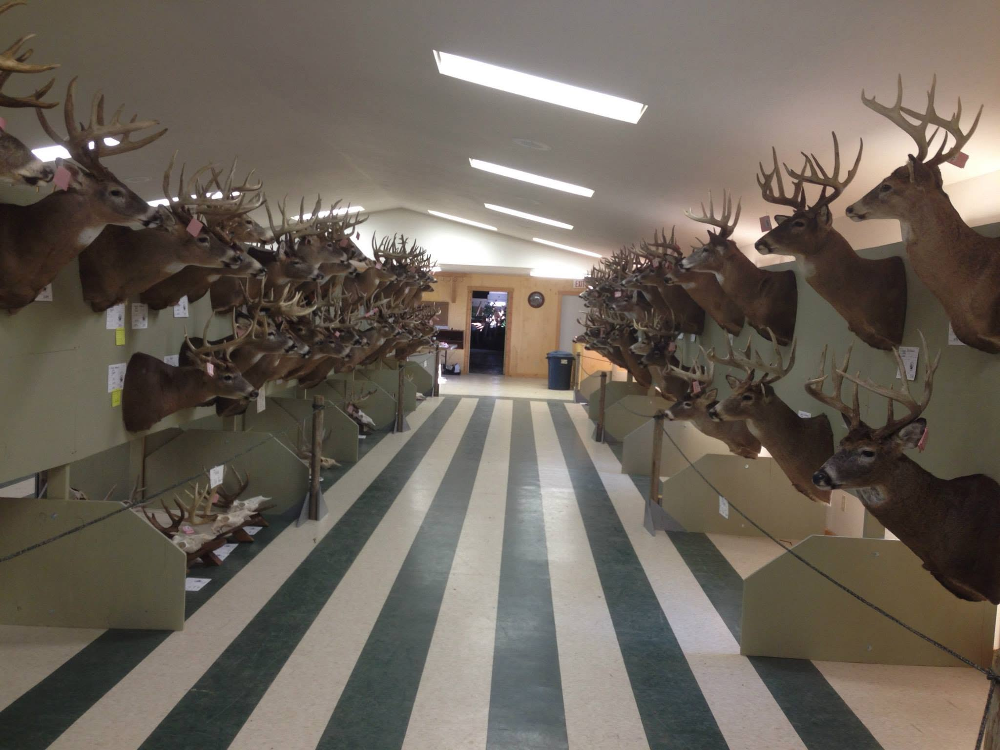
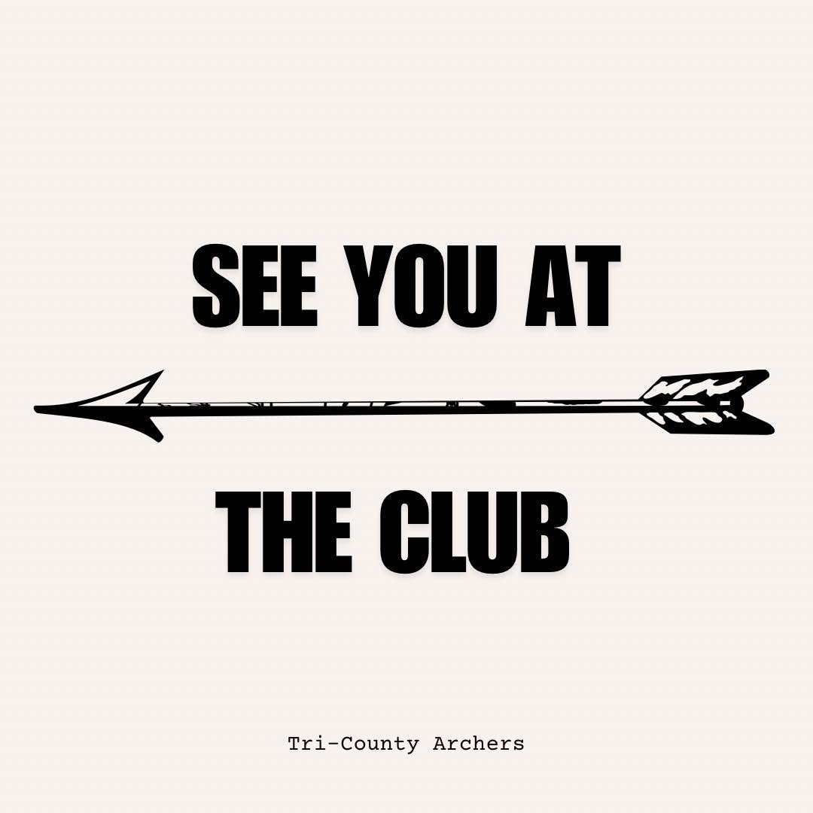

Shoots, leagues, the Brush Shoot and the annual banquet.




Anybody who shoots here can send photos in — league nights, shoots, course setup days, kids' first arrows, the food stand at seven in the morning. Send them through the contact page, or message us on Facebook or Instagram.
If you'd rather not be in a photo on the website, tell us and we'll take it down, no discussion needed.